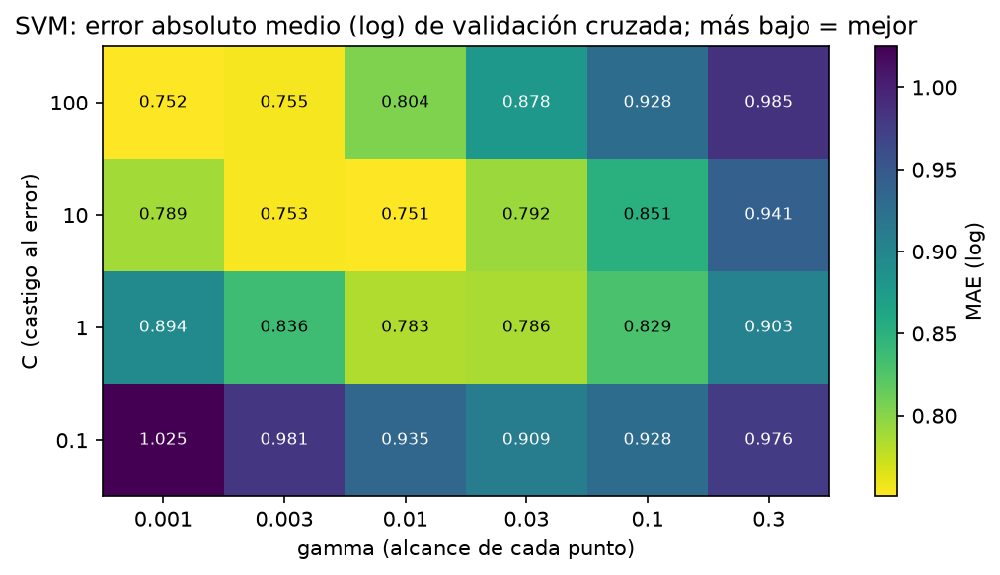
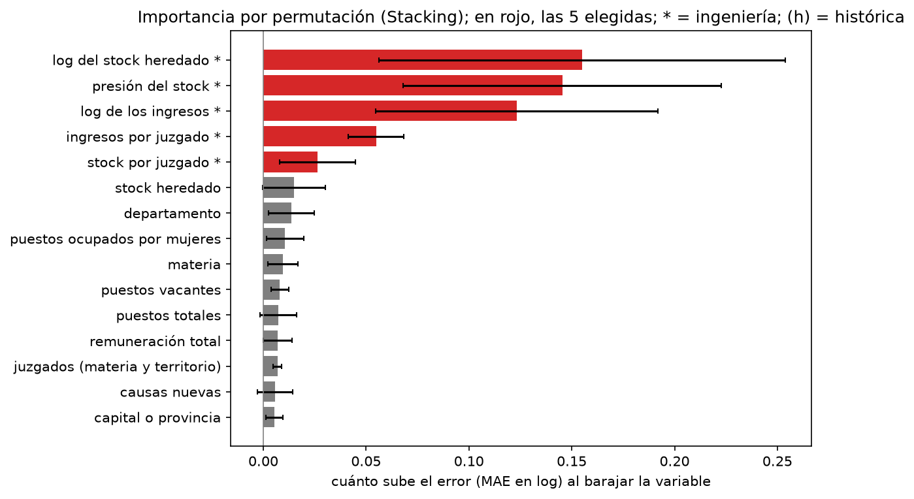

Informe final · 15
Guía de estudio del informe: ¿cuánto va a tardar mi caso?
Esta guía acompaña al informe final (informe/informe.pdf). Empieza por lo más importante, para qué sirve: cómo una persona usa el resultado para saber cuánto tardaría su caso. Después recorre el informe sección por sección, sin saltarse nada: el resumen, la introducción, la historia 2007-2023, cada tabla, cada figura, cada modelo, cada hiperparámetro, las conclusiones, las limitaciones, las referencias y el anexo. Está escrita para alguien que nunca vio estadística ni aprendizaje automático.
Léela en orden la primera vez: cada parte usa ideas de las anteriores. Los títulos siguen la numeración del informe (1.2, tabla 1, figura 1…), para que puedas buscar cada cosa en el PDF. Cada concepto tiene la idea en simple (con un ejemplo de la vida diaria), en nuestro caso (qué significa con nuestros datos) y, cuando hace falta, cuidado con… (el error típico). Al final de cada parte hay preguntas de autoevaluación: la respuesta se abre con un clic.
Lo primero: para qué sirve todo esto
La pregunta de la gente
Una persona va a presentar un divorcio en Sucre, una demanda laboral en Santa Cruz o un cobro ejecutivo en La Paz. Lo primero que quiere saber es cuánto va a tardar. Hoy nadie se lo puede decir con datos: la respuesta habitual es «depende». El objetivo práctico del trabajo es darle una respuesta honesta: un tiempo estimado y un rango, para su tipo de proceso y su ciudad, con los datos oficiales del Órgano Judicial.
Cómo se usa la página, paso a paso
- Abrir proyanalisis.maxi42.space (o escanear el QR de la portada de la presentación).
- Elegir la materia (familia, civil y comercial, niñez y adolescencia, trabajo, coactivo fiscal), el tipo de proceso (divorcio, asistencia familiar, ejecutivo…) y el lugar (una de las 10 capitales, El Alto incluido, o las provincias de un departamento).
- Leer el bloque grande: «Si tu caso entra ahora, tardaría unos…», con el rango probable debajo («lo más probable: entre … y …»).
- Mirar la regla de colores: el punto es la estimación, la barra es el rango y la rayita dorada es lo que tardaba la fila en 2023.
- Comparar con el mismo trámite en otros lugares y con el ritmo de la materia (si los juzgados están resolviendo más o menos que antes).
En 2023, los juzgados de familia de Sucre empezaron el año con 173 divorcios (desvinculación, artículo 207) heredados de 2022; entraron 778; se resolvieron 784; quedaron 167 esperando al cierre. Hay 10 juzgados de familia en Sucre. La página dice: «Si tu caso entra ahora, tardaría unos 67 días. Lo más probable: entre 44 y 97 días.» Y en 2023 la fila tardaba 78 días. Volveremos a este caso en cada parte para ver de dónde sale cada número.
Cómo leer el resultado sin engañarse
- Es el tiempo de la fila del grupo, no el plazo de tu expediente. El Anuario no sigue causas una por una: dice cuántas había, cuántas entraron y cuántas se resolvieron en cada tipo de proceso y lugar. Tu caso puede ir más rápido o más lento según el juzgado, las partes, las pruebas o si hay apelación.
- El rango importa más que el número. «Unos 67 días, entre 44 y 97» quiere decir: en trámites parecidos que el modelo no había visto, la mitad de las veces el tiempo real cayó en un rango así.
- Los trámites chicos son menos firmes. Si en tu lugar hubo menos de 10 causas de ese tipo en 2023, la página te avisa: una sola causa cambia mucho el tiempo, y la estimación se apoya en trámites parecidos de otros lugares.
- Sirve para hacerse una idea y para preguntar (a un abogado, al juzgado), no como plazo legal ni para juzgar a un juez.
Para quien gestiona juzgados
La página tiene una tabla «Dónde un caso nuevo tardaría más», filtrable por departamento y materia. Sirve para decidir dónde mirar primero: a dónde mandar juzgados de refuerzo, redistribuir causas o empujar la conciliación. Y el análisis deja una idea muy concreta: se tarda donde la fila heredada es grande frente a lo que los juzgados pueden sacar, no simplemente donde hay muchas causas.
Autoevaluación · Para qué sirve
Si la página dice «unos 5 meses, entre 3 y 7», ¿mi caso va a tardar 5 meses?
No necesariamente. Es el tiempo de la fila de todas las causas de ese tipo en ese lugar. Lo más probable es que un caso típico quede entre 3 y 7 meses, pero un expediente concreto depende del juzgado, de las partes y de lo que se pida.
¿Por qué la página muestra dos tiempos (el estimado y el de 2023)?
El de 2023 es una cuenta directa con los datos del Anuario (pendientes ÷ resueltas × 365). El estimado es lo que dice el modelo para un caso que entra ahora, con la fila que quedó al cierre de 2023. Normalmente se parecen; si no, el estimado suele ser más prudente en los trámites chicos.
¿Por qué no aparecen los procesos penales?
Porque el Anuario no publica cuántas causas penales se resolvieron. Sin ese dato no se puede calcular cuánto tarda la fila.
Antes de seguir: las palabras que se usan todo el tiempo
Los datos: filas, columnas y variables
Imagina una planilla de Excel. Cada fila es una cosa que se observa; cada columna, una característica. En el informe:
- Una fila es un tipo de proceso en un lugar: por ejemplo, «divorcio, familia, Sucre». No es un juicio individual: es el resumen de todos los juicios de ese tipo en ese lugar durante 2023. En la página también se le dice trámite.
- Una variable es una columna que se usa para estimar: la materia, cuántas causas entraron, cuántos juzgados hay…
- La variable objetivo es la columna que se quiere adivinar: cuántos días tarda la fila.
Una causa y sus cinco números
Piensa en una cuenta bancaria. El 1 de enero hay un saldo; durante el año entran depósitos y salen retiros; el 31 de diciembre queda otro saldo. Los juzgados funcionan igual con las causas (los expedientes):
| Número | En una cuenta bancaria | En un juzgado | Divorcio en Sucre, 2023 |
|---|---|---|---|
| stock heredado (pendientes al inicio) | saldo del 1 de enero | causas que venían abiertas del año anterior | 173 |
| ingresos del año | depósitos | causas que entraron durante el año | 778 |
| atendidas | todo el dinero con el que se trabajó | stock heredado + ingresos | 951 |
| resueltas | retiros | causas que se terminaron en el año | 784 |
| pendientes al cierre | saldo del 31 de diciembre | causas que siguen abiertas | 167 |
Siempre se cumple: atendidas = stock heredado + ingresos = resueltas + pendientes al cierre (173 + 778 = 784 + 167 = 951). Es la identidad contable. Más detalle en conceptos jurídicos.
El tiempo de la fila
La idea en simple. En una fila del banco hay 20 personas delante tuyo y la cajera atiende 40 por hora: vas a esperar media hora. En un juzgado, la «fila» son las causas pendientes y la «velocidad» son las causas que se resuelven por año:
tiempo de la fila (días) = pendientes al cierre ÷ resueltas en el año × 365
En nuestro caso. Divorcio en Sucre: 167 ÷ 784 × 365 = 77,7 días. Si mañana entra un divorcio nuevo, tiene unas 167 causas delante y los juzgados sacan unas 784 al año (2,1 por día): tarda unos 78 días en llegar su turno. Es la «duración estimada» del CEJA (Centro de Estudios de Justicia de las Américas) y la duracion_estimada_dias del notebook 10.
Qué es un «modelo» y qué es «entrenar»
Un modelo es una receta que recibe datos y devuelve una respuesta. Un mecánico con experiencia escucha el motor y dice «eso son unos tres días de taller»: aprendió de cientos de autos anteriores. Un modelo hace lo mismo con números: entrenar es mostrarle muchos ejemplos de los que ya se sabe la respuesta, para que encuentre el patrón. Estimar (o predecir) es usarlo con un caso nuevo.
Lo que devuelve nuestro modelo es un número de días. Cuando la respuesta es un número (y no una clase como «sí/no»), el problema se llama regresión.
La portada y el resumen
La portada lleva el escudo de la Universidad Mayor de San Andrés, la materia (Análisis de Datos), la docente (M.Sc. Madelina Loza Soliz), los tres integrantes, el lugar y la fecha. El título es la pregunta de la gente: «¿Cuánto va a tardar mi caso?». El subtítulo dice las cuatro etapas que pidió la docente en la pizarra (preprocesamiento, modelos de regresión, evaluación y despliegue) y que se usa la historia 2007-2023.
El resumen cuenta todo el informe en un párrafo. Traducido:
- Quien presenta un caso quiere saber cuánto va a tardar. El Anuario no sigue causas, pero dice cuántas había, entraron y se resolvieron en cada tipo de proceso y lugar, y trae la historia del país desde 2007.
- Con eso se mide el tiempo de la fila. La historia comprueba que la medida funciona: el tiempo estimado quedó a una mediana de 11,7 % de lo que la fila de verdad tardó en vaciarse (47 comprobaciones), y de un año al siguiente cambia una mediana de 8,8 %.
- Se entrenan modelos de regresión con lo que se sabe al presentar el caso: la fila que espera, las causas que entran, los juzgados, la materia, el lugar y la tendencia histórica de la materia.
- Con 808 procesos, el mejor modelo (Stacking) deja al 67 % de los procesos de prueba entre la mitad y el doble de su tiempo real (88 % en los grandes).
- El modelo publicado (Gradient Boosting, 5 variables que salen de solo 3 datos) logra 68 % y da cada estimación con un rango.
Después está el índice: introducción, las cuatro secciones de la pizarra, conclusiones, limitaciones, referencias y el anexo de reproducción.
Introducción
La introducción tiene cuatro párrafos:
- El problema práctico: no existe una forma pública de saber cuánto tardará un proceso. «Depende» es cierto, pero una parte se puede medir: cuántas causas hay delante y a qué ritmo se resuelven.
- La medida: el tiempo de la fila (pendientes ÷ resueltas × 365). Es un número de días: el problema es de regresión.
- La historia: un año solo no alcanza para saber si la medida sirve; el capítulo 9 del Anuario trae el movimiento del país, las capitales y las provincias de 2007 a 2023, y las resueltas por materia de 2020 a 2023.
- Los datos del modelo: las cinco materias no penales (las penales no publican resueltas). De los 1.240 procesos con movimiento en 2023 entran al modelo los 808 con al menos 10 causas atendidas y alguna resuelta, de 78 tipos de proceso. Todo el código está en notebooks: del 01 al 18, la construcción de los datos; del 19 al 23, lo que cuenta el informe.
Autoevaluación · Introducción
Calcula el tiempo de la fila de un trámite con 300 pendientes al cierre y 600 resueltas en el año.
300 ÷ 600 × 365 = 182,5 días, unos 6 meses.
¿Por qué es una regresión y no una clasificación?
Porque la respuesta es un número (días), no una clase (sí/no).
¿Por qué hace falta la historia si el modelo se entrena con 2023?
Porque con un solo año no se puede saber si «pendientes ÷ resueltas» se parece a lo que la fila de verdad tarda, ni si el dato de un año sirve para el año siguiente. La serie 2007-2023 permite comprobar las dos cosas.
1 · Preprocesamiento
La idea en simple. Antes de cocinar hay que comprar, lavar, pelar y cortar. El preprocesamiento es todo lo que se le hace a los datos antes de entrenar un modelo. La pizarra lo divide en tres: análisis exploratorio (mirar), limpieza (sacar lo que estorba o engaña) y conversión (dejarlo en el formato que el modelo entiende). En este informe, el análisis exploratorio empieza por la historia.
1.1 · De dónde vienen los datos
El Anuario es un PDF de 774 páginas: se puede leer, pero no se puede calcular con él. Esta parte resume el trabajo de los notebooks 01 a 18:
- Inventario y extracción (01 a 07). Se revisó cada página y se sacaron los números de los cuadros con técnicas distintas según el formato: por posición, por coordenadas de cada palabra y por «firmas» de encabezado. Detalle en técnicas de extracción.
- Normalización (04 a 06). Se unificaron nombres de materias y territorios y se convirtieron los textos a números con la convención boliviana (el punto separa miles: «86.285» es ochenta y seis mil). Resultado: 12 tablas con 85.953 filas, cada una con su cuadro y su página de origen.
- Validación (05). Se verificaron doce identidades contables del propio Anuario. Se encontraron 117 discrepancias de la fuente: se registraron, no se «arreglaron». Ver validación y discrepancias.
- Integración (08) y exploración (09 a 18). Una capa analítica con recursos y personal pegados a cada fila; indicadores de congestión, valores raros, la serie 2007-2023, la concentración del rezago y el personal. Ver EDA y la ampliación.
1.2 · Lo que enseña la historia (2007-2023)
La idea en simple. Antes de confiar en un termómetro nuevo, se lo compara con uno que ya se sabe que funciona. Antes de construir un modelo que estima «el tiempo de la fila», hay que saber si esa medida dice algo real. Para eso sirven los años pasados.
El tiempo, año por año (figura 1, izquierda)
Los cuadros 9.1.4 (capitales), 9.1.8 (provincias) y 9.1.12 (país) del capítulo 9 traen, para cada año de 2007 a 2023, las pendientes al inicio, las ingresadas, las resueltas y las pendientes al cierre de todas las materias (penales incluidas). Con ellos se calculó el tiempo de la fila de cada año:
- País: 359 días en 2007, sube hasta 448 en 2012, baja a 316 en 2015, salta a 485 en 2020 (la pandemia: se resolvió menos) y queda en 340 en 2023, el valor más bajo desde 2015.
- En 2023 las capitales (331 días) ya son más rápidas que las provincias (365). En 2007 era al revés: las provincias eran mucho más rápidas (247 contra 395).
¿La fila se vació en el tiempo estimado? (tabla 1)
La idea en simple. Si el 31 de diciembre de 2015 quedaban 409.823 causas pendientes en el país y el tiempo estimado decía «316 días», podemos mirar los años siguientes y ver cuánto tardaron de verdad los juzgados en resolver 409.823 causas.
Cómo se calcula. Se van sumando las resueltas de 2016, 2017… hasta llegar a las pendientes de ese cierre. Si en 2016 se resolvieron 419.162 (más que 409.823), alcanzó con una parte de 2016: 409.823 ÷ 419.162 = 0,98 años = 357 días. El estimado era 316: se quedó corto en 11 %.
La tabla 1 muestra, para el país y cada año de 2007 a 2022, el tiempo estimado, lo que de verdad tardó y la diferencia. Con capitales y provincias son 47 comprobaciones (2023 no se puede comprobar: no hay años siguientes). Resultado:
- Diferencia mediana: 11,7 % (la mitad de las comprobaciones se equivocó por menos que eso); media 12,4 %.
- Sesgo +5,4 %: el estimado tiende a pasarse un poco. Es una medida algo pesimista: mejor eso que prometer de menos.
- El peor caso, 2020 (+28 %): la pandemia frenó las resoluciones ese año, y los años siguientes se recuperaron.
Es una comprobación aproximada. Supone que las causas se resuelven en orden de llegada (la primera que entró es la primera que sale), y el Anuario dice cuántas se resolvieron, no cuáles. Además, el stock al cerrar un año no coincide exactamente con el del inicio del siguiente (notebook 15). Aun así, muestra que la medida está en el orden correcto.
¿Cuánto cambia de un año al siguiente? (tabla 2)
La idea en simple. Si el pronóstico «mañana hará el mismo tiempo que hoy» acierta casi siempre, el dato de hoy sirve para mañana. Aquí: si el tiempo de un año se parece al del siguiente, el último Anuario sirve para quien presenta su caso después.
La tabla 2 compara tres formas de anticipar el tiempo de un año con lo que se sabía antes, en los 48 años-ámbito de la serie (16 años × país, capitales y provincias):
| Forma | Cálculo | Qué supone | Error mediano | Sesgo | Peor año |
|---|---|---|---|---|---|
| el tiempo del año anterior | el de t − 1 | la fila se mueve como el año pasado | 8,8 % | −0,4 % | 35,2 % |
| stock ÷ ritmo anterior | stock heredado de t ÷ resueltas de t − 1 × 365 | se resuelve como el año pasado | 18,2 % | −10,6 % | 40,7 % |
| fórmula ingenua | stock heredado de t ÷ ingresos de t × 365 | se resuelve todo lo que entra | 25,0 % | −24,1 % | 51,1 % |
- Error mediano: la mitad de los años se equivocó por menos que eso. Sesgo: si se pasa (+) o se queda corto (−) en promedio. Peor año: el mayor error.
- El tiempo del año anterior se equivoca poco (8,8 %) y sin sesgo: el tiempo cambia poco de un año al siguiente, salvo en años raros (la pandemia).
- La fórmula ingenua siempre se queda corta (−24 %) porque casi nunca se resuelve todo lo que entra. Por eso se usa como referencia que el modelo debe superar.
Las materias y la variable histórica (figura 1, derecha)
Por materia el Anuario solo trae las resueltas de 2019 a 2023 (cuadros 9.1.2 para capitales y 9.1.6 para provincias). 2019 no se usa porque no cuadra con los totales (notebook 15), y 2020 fue el año de la pandemia. La figura 1 (derecha) dibuja cada materia con 2020 = 100: todas subieron hasta 2023 (civil en capitales +77 %, trabajo en provincias +117 %).
De ahí sale la variable histórica del modelo, la tendencia histórica de la materia: cuánto cambiaron las resoluciones de la materia, en su ámbito (capital o provincia), el año anterior al caso:
- para un caso de 2023: resueltas de 2022 ÷ resueltas de 2021 − 1. Familia en capitales: 52.685 ÷ 53.128 − 1 = −0,8 % (ese es el valor para el divorcio en Sucre);
- para un caso de 2024 (el de la página): resueltas de 2023 ÷ resueltas de 2022 − 1.
Usa solo años pasados: no espía el año que se quiere estimar (eso sería fuga, se explica en 1.4).

Figura 1, cómo se lee. Izquierda: una línea por ámbito (negra el país, azul las capitales, verde las provincias) con el tiempo estimado de cada año; la línea roja punteada es lo que la fila del país de verdad tardó en vaciarse; la franja gris marca 2020. Las dos líneas del país van juntas: esa es la comprobación. Derecha: las resueltas de cada materia no penal, con 2020 = 100 (línea llena: capitales; punteada: provincias).
1.3 · Análisis exploratorio del objetivo (figura 2)
- El tiempo mediano de los 808 procesos es 221 días; la mitad está entre 100 y 503 días.
- Las materias difieren mucho (mediana): coactivo fiscal 887 días, trabajo 375, civil 243, familia 195, niñez 146. Capital y provincia, poco: 209 contra 236.
Para medir la relación de cada variable con el tiempo se usó la correlación de Spearman, que se escribe ρ («ro»):
Mide si, cuando una cosa sube, la otra tiende a subir (ρ positivo) o a bajar (ρ negativo). Va de −1 a +1; 0 es «no hay relación». Usa el orden de los valores (el primero, el segundo…), así que un proceso gigante no pesa más que los demás. Regla práctica: menos de 0,3 es débil; más de 0,5, fuerte.
- Presión del stock (stock heredado ÷ ingresos): ρ = +0,64, la más fuerte. Donde la fila heredada es grande frente a lo que entra, se tarda más.
- Ingresos del año: ρ = −0,21. Los procesos con mucho movimiento resuelven rápido (un juzgado que recibe mucho también despacha mucho).
- Stock heredado solo: ρ = +0,23. Dice algo, pero mucho menos que dividido por los ingresos: la pista de que conviene construir variables.
- Tendencia histórica: ρ = +0,16, débil.

Figura 2, cómo se lee. Izquierda: un histograma (cuántos procesos hay en cada rango de días). Casi todos están a la izquierda y unos pocos llegan a 3.650 días: una cola larga. Centro: el mismo dato en logaritmo de (1 + días), que es lo que aprende el modelo: la forma es más pareja (queda una pequeña montaña en 0: los procesos que no dejaron nada pendiente). Derecha: la mediana por materia; la línea gris es la mediana general.
1.4 · Limpieza
Qué filas entran
La idea en simple. Si preguntas a una sola persona cuánto tardó su trámite, sabes su anécdota, no el tiempo típico. Con 2 o 3 causas pasa lo mismo.
- En la mitad de los procesos hubo 28 causas o menos en todo el año. Con 1 resuelta y 2 pendientes, el «tiempo» sería 2 ÷ 1 × 365 = 730 días; si se resolviera una más, 1 ÷ 2 × 365 = 183. Eso mide la suerte de una causa.
- Por eso entran al modelo los procesos con al menos 10 causas atendidas: quedan fuera 422.
- El filtro usa las atendidas (stock heredado + ingresos), un dato que se conoce al empezar, no las resueltas ni el tiempo. Si se eligieran las filas mirando el tiempo, se estaría eligiendo con la respuesta (una forma sutil de fuga).
- También quedan fuera 10 procesos con 10 o más causas y ninguna resuelta: su tiempo no existe (dividir por cero).
- 1.240 − 422 − 10 = 808. Los procesos que quedan fuera del entrenamiento sí aparecen en la página, con una advertencia.
Fuga de información (tabla 3)
La idea en simple. Si a un estudiante le das el examen con las respuestas al margen, saca 100 pero no aprendió nada. Fuga de información es darle al modelo, sin querer, una variable que contiene la respuesta.
En nuestro caso. El tiempo es pendientes al cierre ÷ resueltas. Cualquier columna hecha con las resueltas o con las pendientes al cierre es la respuesta disfrazada, y además quien presenta su caso no las conoce: son lo que va a pasar en el año. Se sacaron 19 columnas (tabla 3 del informe):
| Columnas de la tabla 3 | Por qué contienen la respuesta |
|---|---|
resueltas, log_resueltas | el tiempo se divide por las resueltas |
pendientes_fin, log_pendientes_fin | el tiempo es pendientes al cierre ÷ resueltas |
duracion_estimada_dias y su versión winsorizada | es el objetivo (y el objetivo recortado) |
tasa_resolucion y sus dos variantes | resueltas ÷ ingresos |
tasa_congestion y su versión winsorizada | atendidas ÷ resueltas |
tasa_pendencia | usa las pendientes al cierre |
acumulacion_neta_anual, flag_acumula_mora | ingresos − resueltas, y la marca que se calcula con eso |
flag_sin_resolucion_anual, flag_sin_movimiento, estado_gestion | marcas calculadas mirando las resueltas |
es_outlier_congestion_iqr, es_outlier_duracion_iqr | marcas de valores raros construidas con la congestión y el tiempo |
«Winsorizada» quiere decir que los extremos se recortaron a un tope; «log» es el logaritmo. Ninguna de las dos cosas quita la fuga. El notebook 19 tiene un assert (una línea que detiene todo si algo no se cumple) que verifica que ninguna de estas columnas entre al modelo.
Un modelo con fuga da resultados espectaculares. Cuando un problema difícil da resultados casi perfectos, lo primero es sospechar una fuga.
Valores faltantes
La idea en simple. Un casillero vacío puede significar «se perdió el dato» o «no aplica». En el formulario de una persona soltera, «nombre del cónyuge» está vacío porque no aplica: rellenarlo con un nombre promedio sería absurdo.
- Dos formas de ingreso —preliminares y cautelares formalizados— solo existen en civil. En las demás materias el vacío es un cero estructural y se llenó con 0.
- El único faltante real es el número de tribunales del territorio (4 filas). Se rellena con la mediana (el valor del medio cuando se ordenan todos) calculada solo con el entrenamiento, dentro del modelo, para que la prueba no influya.
Valores atípicos y el tope de 10 años (figura 3)
- No se eliminan procesos: uno con miles de causas es real (el notebook 11 lo verificó contra el PDF).
- El objetivo se recorta en 10 años (3.650 días): 13 procesos pasaban de ese tope; uno daba 80 años (1 resuelta y 80 pendientes). Más que 10 años es «no se mueve», no un plazo.
- Las cantidades tienen asimetría fuerte (muchos valores chicos y unos pocos enormes). En vez de borrar, se agregan versiones en logaritmo y en cociente. El logaritmo «aplasta» los números grandes: entre 10 y 1.000 hay cien veces de diferencia; en logaritmo (base 10), se pasa de 1 a 3.

Figura 3: a la izquierda, el stock heredado: casi todos pegados al cero y unos pocos muy lejos. A la derecha, su logaritmo: mucho más parejo.
1.5 · Conversión
El modelo solo entiende números, ordenados en una tabla. La conversión tiene siete pasos.
El objetivo en logaritmo
La idea en simple. Equivocarse por 30 días es grave si el trámite dura 30 días y casi nada si dura 3 años. Lo que importa es equivocarse «por el doble» o «por la mitad». El logaritmo convierte multiplicaciones en sumas: en logaritmo, «el doble» es siempre la misma distancia (0,69), sea el proceso rápido o lento.
En nuestro caso. El modelo aprende log(1 + días). El «1 +» evita el logaritmo de cero (los procesos sin fila). Divorcio en Sucre: log(1 + 77,7) = 4,37. Al final, la página hace la cuenta inversa (e4,37 − 1 ≈ 78 días).
Tipos
pandas (la librería de Python para tablas) guarda los conteos con vacíos en un formato especial (Int64 con <NA>) que scikit-learn (la librería de modelos) no acepta. Se convierten a decimales (float64) y las categorías, a texto.
Ingeniería de variables: las 8 variables nuevas
La idea en simple. El precio de una casa dice poco; el precio por metro cuadrado, mucho más. A veces la información útil está en una combinación de columnas: crearla es la ingeniería de variables. Se calculan fila por fila, con fórmulas simples, para que la página web pueda recalcularlas igual. Con el divorcio en Sucre de 2023 (173 heredadas, 778 ingresos, 10 juzgados):
| Variable nueva | Fórmula | Qué mide | Divorcio en Sucre |
|---|---|---|---|
| presión del stock | stock heredado ÷ (ingresos + 1) | qué tan grande es la fila vieja frente a lo que entra | 173 ÷ 779 = 0,22 |
| ingresos por juzgado | ingresos ÷ juzgados | cuánto trabajo nuevo le toca a cada juzgado | 778 ÷ 10 = 77,8 |
| stock por juzgado | stock heredado ÷ juzgados | cuánta fila vieja tiene cada juzgado | 173 ÷ 10 = 17,3 |
| log del stock heredado | log(1 + stock) | el stock con la cola aplastada | log(174) = 5,16 |
| log de los ingresos | log(1 + ingresos) | los ingresos con la cola aplastada | log(779) = 6,66 |
| proporción de vacantes | puestos vacantes ÷ puestos totales | qué parte del personal falta | (dato del departamento) |
| proporción por excusa | recibidas por excusa ÷ (ingresos + 1) | qué parte entró porque otro juez se apartó | (dato del proceso) |
| sin stock heredado | 1 si el stock es 0 | marca a los que empiezan de cero | 0 |
El «+ 1» evita dividir por cero cuando un proceso no tuvo ingresos.
La variable histórica
La tendencia histórica de la materia (sección 1.2): para el divorcio en Sucre en 2023, −0,8 % (familia en capitales casi no cambió de 2021 a 2022). Es la misma para todos los procesos de una materia en un ámbito.
One-hot
La idea en simple. Si se codificara civil = 1, familia = 2, niñez = 3, el modelo creería que niñez es «el triple» de civil. Se crea una columna de sí/no (1/0) por cada categoría: «¿es civil?», «¿es familia?»… Eso es one-hot.
En nuestro caso. Materia (5), departamento (9) y ámbito (2) se convierten en 16 columnas. Más las 25 numéricas, las 28 variables quedan en 41 columnas.
Escala
La idea en simple. Si comparas personas sumando la diferencia de sueldo (miles) y de edad (decenas), el sueldo tapa la edad. Escalar lleva cada variable a «media 0 y desvío 1»: a cada valor se le resta el promedio y se divide por cuánto varía.
En nuestro caso. Solo para el SVM, la regresión lineal y el Stacking, que miden distancias o suman variables. Los árboles no lo necesitan.
Partición: entrenamiento y prueba
La idea en simple. Un profesor no toma el examen con los mismos ejercicios de la clase: guarda ejercicios nuevos para el final.
- 646 procesos (80 %) son el entrenamiento: con ellos se entrena, se compara y se elige. (El divorcio en Sucre cayó aquí.)
- 162 procesos (20 %) son la prueba: ningún modelo los ve hasta la evaluación final.
- La partición está estratificada por quintiles del tiempo: se ordenan los procesos de más rápido a más lento, se parten en 5 grupos iguales (quintiles) y de cada grupo se saca el 20 %. Así las dos partes tienen la misma mezcla de rápidos y lentos (mediana 224 y 210 días).
El Pipeline
Un Pipeline («tubería») encadena los pasos: rellenar faltantes → one-hot → escalar → modelo. La mediana, las categorías y la escala se aprenden solo con el entrenamiento y se aplican igual a los demás datos. Si se calcularan con todos, la prueba «filtraría» información (otra fuga, pequeña pero real).
Tabla 4: las 28 variables del modelo
La tabla 4 lista cada variable con cinco columnas: Variable (el nombre en los datos), Descripción (o su fórmula), Grupo (original, ingeniería o histórica), Conversión (one-hot, mediana, cero estructural + mediana) y ρ Spearman con el objetivo («---» en las categóricas).
Las 19 originales son: materia, ámbito, departamento; stock heredado, causas nuevas, recibidas por excusa, preliminares formalizados, cautelares formalizados, ingresos del año, causas atendidas; juzgados de esa materia y territorio, juzgados, tribunales y conciliadores del territorio; puestos ocupados por mujeres, por varones, vacantes, puestos totales y remuneración total. Más 8 de ingeniería y 1 histórica = 28.
Los números 19, 25 y 5 de la pizarra eran ejemplos. Los nuestros salen de los datos: 19 originales sin fuga, 28 con ingeniería e historia, y las 5 más importantes.
Autoevaluación · Parte 1
¿Qué comprobó la historia y con qué resultado?
Dos cosas: que el tiempo estimado se parece a lo que la fila de verdad tardó en vaciarse (diferencia mediana 11,7 % en 47 comprobaciones, algo pesimista: +5,4 %) y que el tiempo cambia poco de un año al siguiente (8,8 % de error mediano usando el del año anterior).
¿Por qué la fórmula ingenua siempre se queda corta?
Porque supone que se resuelve todo lo que entra, y en la realidad casi siempre se resuelve un poco menos: la fila crece y tarda más de lo que la fórmula dice (sesgo −24 %).
¿Por qué el filtro usa las causas atendidas y no las resueltas?
Porque las atendidas (stock heredado + ingresos) son un dato de entrada. Filtrar por las resueltas o por el tiempo sería elegir los ejemplos mirando la respuesta.
¿Por qué las pendientes al cierre no pueden ser una variable del modelo?
Porque el tiempo es pendientes al cierre ÷ resueltas: sería darle la mitad de la respuesta. Además, quien presenta su caso no las conoce.
¿Por qué el modelo aprende el logaritmo de los días?
Porque en logaritmo «equivocarse por el doble» pesa igual en un proceso de 30 días que en uno de 900, y unos pocos procesos lentísimos no dominan el aprendizaje.
¿Cuánto vale la presión del stock de un proceso con 200 causas heredadas y 399 ingresos?
200 ÷ (399 + 1) = 0,5: la fila vieja es la mitad de lo que entra en el año.
¿Por qué la tendencia histórica de 2023 usa 2022 contra 2021 y no 2023?
Porque las resueltas de 2023 todavía no se conocen cuando se presenta un caso en 2023. Usarlas sería espiar el año que se quiere estimar.
¿Por qué 28 variables se convierten en 41 columnas?
Porque las 3 categóricas se abren en una columna por categoría (5 materias + 9 departamentos + 2 ámbitos = 16) y se suman a las 25 numéricas.
2 · Modelo
La idea en simple. Ya tenemos la planilla lista (808 trámites, 28 variables, el tiempo en logaritmo). Ahora hay que elegir la receta que mejor convierte esas variables en días. La pizarra pide cuatro familias: SVM, Bagging, Boosting y Stacking, cada una con sus perillas (hiperparámetros) ajustadas. Esta parte del informe es el notebook 20.
El protocolo: cómo se comparan los modelos
Validación cruzada de 5 pliegues
La idea en simple. Antes del examen final se hacen simulacros. Los 646 trámites de entrenamiento se parten en 5 grupos (pliegues) de unos 129. Se entrena con 4 grupos y se mide con el quinto; se repite cinco veces cambiando el grupo de medición; se promedian las cinco notas. El desvío dice cuánto variaron las notas entre simulacros: si es grande, el resultado depende de la suerte de cómo se partió.
En nuestro caso. Todo lo del notebook 20 (comparar modelos y elegir perillas) se hace así. Los 162 trámites de prueba no se tocan hasta la parte 3. El divorcio en Sucre está en el entrenamiento: en cada simulacro le toca una vez ser «examen» y cuatro veces ser «clase».
Cómo se mide el error (el recuadro del informe)
Como el modelo devuelve días, la pregunta es «¿por cuánto se equivocó?». El informe usa una medida principal y tres para leerla en palabras.
| Medida | Qué es, en simple | Cómo se lee |
|---|---|---|
| MAE en log (error absoluto medio en log(1 + días)) | a cada trámite se le resta el valor real al estimado, en logaritmo; se quita el signo y se promedia | más bajo es mejor. Es la que se minimiza al elegir perillas |
| dentro del doble | de cada 100 trámites, en cuántos el tiempo real quedó entre la mitad y el doble de lo estimado | más alto es mejor. Si se estiman 100 días, «dentro» es real entre 50 y 200 |
| factor mediano | la mitad de las estimaciones se equivoca por menos que este factor | ×1,5 = la mitad de las veces el error es menor que «50 % de más o un tercio de menos» |
| R² en log («erre cuadrado») | qué parte de las diferencias de tiempo entre trámites explica el modelo | 0 = nada (lo mismo que decir siempre el promedio); 1 = todo. Puede ser negativo si el modelo es peor que el promedio |
En logaritmo, una diferencia de 0,69 es equivocarse por el doble (porque e0,69 = 2). Una diferencia de 0,41 es equivocarse por ×1,5; una de 1,10, por ×3. Entonces un MAE de 0,69 quiere decir: «en promedio, se equivoca por un factor de 2». Ese promedio lo empujan unos pocos errores grandes: por eso el factor mediano (la mitad de los casos) suele ser bastante menor, alrededor de ×1,5.
Ejemplo con Sucre. El tiempo real de 2023 es 77,7 días: log(78,7) = 4,37. Si un modelo estimara 100 días (log 101 = 4,62), el error en log sería |4,62 − 4,37| = 0,25 (100 ÷ 78 = ×1,28): está dentro del doble. Si estimara 200 días (log 201 = 5,30), el error sería 0,93 (×2,6): fuera del doble.
Las tres referencias
Un modelo solo vale si le gana a algo más simple. El informe pone tres «vallas»:
- Línea base: siempre dice el mismo tiempo, el promedio (en log) del entrenamiento. No mira nada del trámite. Es el piso: su R² es 0.
- Fórmula ingenua: stock heredado ÷ ingresos × 365. Sin aprender nada, supone que se resuelve todo lo que entra. Es la que la historia (tabla 2) mostró que siempre se queda corta. Para Sucre: 173 ÷ 778 × 365 = 81 días (aquí le fue bien).
- Regresión lineal con freno (Ridge): el modelo serio más simple. Hace una suma ponderada: cada variable multiplicada por un peso, más una constante. «Ridge» le pone un freno a los pesos grandes: si una variable pide un peso enorme, se lo achica, para que no exagere por casualidades del entrenamiento.
Un ladrillo que usan casi todos: el árbol de regresión
La idea en simple. Un árbol es un juego de «20 preguntas»: «¿presión del stock ≤ 0,5? → sí → ¿ingresos por juzgado ≤ 40? → no → ¿es familia? → …», hasta llegar a una hoja. La hoja da como respuesta el promedio de los trámites de entrenamiento que llegaron ahí. El árbol elige, en cada paso, la pregunta que mejor separa trámites rápidos de lentos.
- No le importa la escala: «¿stock ≤ 100?» y «¿log del stock ≤ 4,6?» separan a los mismos trámites. Por eso los árboles no necesitan escalar.
- Su defecto: un árbol solo es inestable (si cambian un poco los datos, cambian mucho las preguntas) y tiende a memorizar: si se lo deja crecer, termina con una hoja por trámite. Los ensambles (Bagging, Boosting) existen para corregir eso.
2.1 · SVM (en su versión de regresión: SVR)
La idea en simple. Imagina los trámites como puntos en un gráfico (variables en un eje, días en el otro). El SVR traza una curva y alrededor de ella un tubo de ancho ε («épsilon»). Los puntos que caen dentro del tubo no cuentan como error: «casi acerté, está bien». Los que quedan fuera se castigan, en proporción a cuán lejos quedan. Los puntos del borde o de afuera son los vectores de soporte: los que deciden dónde va la curva.
Con el kernel RBF la curva puede doblarse. Funciona como si cada trámite de entrenamiento fuera una «lámpara» que ilumina su alrededor: un trámite nuevo se parece a los trámites cuya luz lo alcanza.
Las tres perillas:
C: cuánto castiga los puntos fuera del tubo. Alto = la curva se esfuerza por pasar cerca de todos (riesgo de memorizar). Bajo = curva perezosa, casi recta.gamma: hasta dónde llega la luz de cada lámpara. Alto = luz cortita: cada punto influye solo en su vecindario y la curva se llena de ondas. Bajo = luz larga: curva suave.epsilon: el ancho del tubo, en las unidades del objetivo (log de días).
Necesita las variables escaladas, porque compara distancias: sin escala, la remuneración (millones) taparía al número de juzgados (decenas).
2.2 · Bagging (y Random Forest)
La idea en simple. Si una persona adivina cuántos caramelos hay en un frasco, se equivoca bastante; si se promedian las adivinanzas de cien personas, el promedio suele ser muy bueno. Bagging (de bootstrap aggregating) entrena muchos árboles, cada uno con una muestra distinta de los trámites tomada con reemplazo (como sacar bolillas de una bolsa y devolverlas: algunas salen dos veces, otras ninguna), y promedia sus estimaciones. Cada árbol solo es inestable; el promedio, mucho menos.
Random Forest («bosque aleatorio») agrega otra dosis de azar: en cada pregunta, el árbol solo puede elegir entre algunas variables sorteadas. Así los árboles se parecen menos entre sí y el promedio aporta más. En el informe, los dos son de la familia Bagging (se usaron BaggingRegressor y RandomForestRegressor).
2.3 · Boosting
La idea en simple. En vez de árboles independientes que se promedian, árboles en fila, cada uno enfocado en lo que los anteriores hicieron mal. Como un alumno que, después de cada prueba, repasa solo los ejercicios que le salieron mal.
- AdaBoost (adaptive boosting): después de cada árbol, los trámites que estimó peor reciben más peso, y el árbol siguiente se esfuerza más en ellos. Al final se combinan todos los árboles, y los que acertaron más pesan más.
- Gradient Boosting: empieza con un valor fijo para todos (en nuestro caso, el del medio). Cada árbol nuevo intenta estimar el error que todavía queda (el residuo) y se le suma una parte. La tasa de aprendizaje dice qué parte: pasos chicos y muchos árboles suelen dar mejor resultado que pasos grandes.
Diferencia clave: Bagging reduce la inestabilidad promediando árboles independientes; Boosting reduce el error encadenando árboles que se corrigen.
La «pérdida» es cómo se cuenta un error. Con la pérdida cuadrática, un error de 2 vale 4 y uno de 10 vale 100: un trámite rarísimo arrastra a todo el modelo. La Huber cuenta los errores chicos al cuadrado y los grandes de forma lineal (un error de 10 vale como 10, no como 100). Así unos pocos trámites extremos —por ejemplo, los que tocan el tope de 10 años— no deforman las estimaciones de los demás.
2.4 · Stacking
La idea en simple. Un comité de expertos distintos da cada uno su opinión, y un presidente aprende a quién creerle más.
En nuestro caso. Los expertos son el SVM, el Random Forest y el Gradient Boosting, con sus perillas ya ajustadas: una curva suave, un promedio de árboles y una fila de árboles, tres formas distintas de mirar los datos. El presidente es una regresión lineal con freno (Ridge): la estimación final es, por ejemplo, «0,4 × lo que dice el SVM + 0,3 × el Random Forest + 0,3 × el Gradient Boosting» (los pesos los aprende).
Detalle importante: el presidente aprende con predicciones fuera de pliegue: cada experto opina sobre trámites que no usó para entrenarse. Si opinara sobre trámites que ya vio, parecería más acertado de lo que es (sobre todo los árboles, que memorizan) y el presidente le creería de más.
2.5 · Hiperparámetros
La idea en simple. Un hiperparámetro es una perilla que se fija antes de entrenar: cuántos árboles, qué tan profundos, cuánto castigar los errores. El modelo no la aprende solo: se elige probando, como la temperatura del horno. Siempre se prueba con validación cruzada, nunca con la prueba.
- Búsqueda en grilla (
GridSearchCV), para el SVM: se prueban todas las combinaciones: 4 valores deC(0,1; 1; 10; 100) × 6 degamma(0,001 a 0,3) × 2 deepsilon= 48 combinaciones, cada una con 5 pliegues (240 entrenamientos). - Búsqueda aleatoria (
RandomizedSearchCV), para el resto: con 4 a 6 perillas la grilla completa tendría cientos de combinaciones, así que se prueban 30 al azar. Se sabe que llega a valores casi igual de buenos con mucho menos trabajo: casi siempre importan una o dos perillas, y el azar prueba más valores distintos de cada una.
Figura 4: la grilla del SVM

Cómo se lee. Cada casilla es el MAE de validación para un par: C en las filas, gamma en las columnas (con el mejor epsilon de los dos). Más bajo es mejor. Va de 1,025 (peor) a 0,751 (mejor).
- Arriba a la izquierda (C = 0,1 y gamma = 0,001): 1,025, casi tan malo como la línea base (1,085). La curva es tan rígida y perezosa que no aprende: eso es subajuste.
- A la derecha (gamma = 0,1 o 0,3): el error vuelve a subir (0,83 a 0,98). La curva se llena de ondas para pasar cerca de cada trámite de entrenamiento y falla con los nuevos: eso es sobreajuste (memorizar).
- El valle es una diagonal: con C más alto conviene gamma más bajo. El mejor punto es C = 10, gamma = 0,01, epsilon = 0,1 (0,751): una curva suave con un castigo moderado. C = 100 con gamma = 0,001 queda casi igual (0,752).
Tabla 5: los hiperparámetros elegidos, perilla por perilla
| Modelo | Perilla | Valor | Qué significa |
|---|---|---|---|
| SVM | C | 10 | castigo moderado a los trámites fuera del tubo |
| SVM | epsilon | 0,1 | el tubo tolera errores de hasta 0,1 en log (unos ±10 % en días) sin castigo |
| SVM | gamma | 0,01 | cada trámite influye lejos: curva suave |
| Regresión lineal (Ridge) | alpha | 10 | la fuerza del freno a los pesos; más alto = pesos más chicos y prudentes |
| Bagging | n_estimators | 200 | cantidad de árboles que se promedian |
| Bagging | max_samples | 0,5 | cada árbol ve una muestra del tamaño de la mitad de los trámites: árboles más distintos entre sí |
| Bagging | max_features | 1 | cada árbol puede usar todas las variables (100 %) |
| Bagging | estimator__min_samples_leaf | 1 | las hojas pueden tener un solo trámite: cada árbol memoriza su muestra, y el promedio de 200 compensa |
| Random Forest | n_estimators | 400 | cantidad de árboles |
| Random Forest | min_samples_leaf | 2 | al menos 2 trámites por hoja |
| Random Forest | max_features | 0,5 | en cada pregunta se sortea la mitad de las variables |
| Random Forest | max_depth | 8 | hasta 8 preguntas seguidas por árbol (como máximo 28 = 256 hojas) |
| AdaBoost | n_estimators | 100 | árboles en la fila |
| AdaBoost | loss | exponential | cómo se pasa el error de cada trámite a su peso: «exponencial» sube mucho el peso de los peor estimados |
| AdaBoost | learning_rate | 0,05 | cuánto pesa cada árbol nuevo: pasos chicos |
| AdaBoost | estimator__max_depth | 6 | cada árbol hace hasta 6 preguntas seguidas |
| Gradient Boosting | subsample | 0,85 | cada árbol se entrena con un 85 % de los trámites, sorteado (un poco de azar que evita memorizar) |
| Gradient Boosting | n_estimators | 100 | árboles en la fila |
| Gradient Boosting | min_samples_leaf | 10 | al menos 10 trámites por hoja: cada corrección se apoya en un grupo, no en un caso |
| Gradient Boosting | max_depth | 4 | cada árbol hace hasta 4 preguntas seguidas |
| Gradient Boosting | loss | huber | los errores grandes cuentan de forma lineal (ver el recuadro de 2.3) |
| Gradient Boosting | learning_rate | 0,03 | cada árbol corrige solo un 3 % del error que queda: pasos chicos |
El nombre estimator__… (con dos guiones bajos) quiere decir «la perilla del árbol que va adentro»: Bagging y AdaBoost envuelven árboles, y esa perilla es de cada árbol. El Stacking no tiene fila propia: usa las perillas de sus tres expertos.
Resultados: tabla 6 y figura 5
La tabla 6 tiene, para cada modelo: su familia; el MAE por defecto (con las perillas de fábrica de scikit-learn) y ajustado (con las de la tabla 5); el desvío entre los 5 pliegues; y la proporción dentro del doble y el R² del modelo ajustado.
| Modelo | Familia | Por defecto | Ajustado | Desvío | Dentro del doble | R² |
|---|---|---|---|---|---|---|
| Línea base (promedio) | referencia | 1,085 | 1,085 | 0,120 | 43 % | −0,02 |
| Fórmula ingenua | referencia | 0,888 | 0,888 | 0,044 | 58 % | 0,05 |
| Regresión lineal (Ridge) | referencia | 0,796 | 0,787 | 0,093 | 61 % | 0,38 |
| SVM | SVM | 0,790 | 0,751 | 0,092 | 64 % | 0,44 |
| Bagging | Bagging | 0,804 | 0,752 | 0,083 | 62 % | 0,43 |
| Random Forest | Bagging | 0,767 | 0,752 | 0,076 | 63 % | 0,43 |
| AdaBoost | Boosting | 0,890 | 0,755 | 0,067 | 63 % | 0,40 |
| Gradient Boosting | Boosting | 0,780 | 0,746 | 0,080 | 65 % | 0,44 |
| Stacking | Stacking | 0,751 | 0,738 | 0,088 | 64 % | 0,46 |

Figura 5: para cada modelo, una barra con el MAE por defecto y otra con el ajustado; la línea gris es la línea base. Más bajo es mejor. Cómo se lee la tabla y la figura:
- Todos los modelos le ganan a las dos referencias: la línea base se equivoca 1,085 (un factor de casi 3) y la fórmula ingenua 0,888; el mejor, Stacking, baja a 0,738.
- Seis modelos quedan juntos arriba (Stacking 0,738, Gradient Boosting 0,746, SVM 0,751, Bagging 0,752, Random Forest 0,752, AdaBoost 0,755). Sus diferencias (a lo sumo 0,02) son menores que el desvío entre pliegues (alrededor de 0,08): con estos datos no se puede decir que uno sea claramente mejor. Es como dos alumnos que sacan 73 y 74 en un examen donde la nota de un mismo alumno varía ±8 según el día.
- La regresión lineal queda atrás (0,787): parte de la relación entre la carga y el tiempo no es una simple suma de efectos (por ejemplo, la misma fila pesa distinto según cuántos juzgados la atienden).
- Ajustar ayuda a todos, sobre todo a AdaBoost (de 0,890 a 0,755: con las perillas de fábrica usa árboles de 3 preguntas y pasos grandes) y a Bagging (de 0,804 a 0,752: muestras de la mitad hacen árboles más distintos).
- El Stacking gana por poco: combina tres expertos que, en el fondo, aprenden la misma señal (la carga frente a la capacidad), así que combinarlos agrega poco.
Deja a casi 6 de cada 10 trámites dentro del doble, pero su R² es casi 0: no explica las diferencias entre trámites. ¿Cómo puede ser? Acierta en los trámites «normales» (donde se resuelve más o menos lo que entra) y en los que tienen mucha fila se queda muy corta, con errores enormes. Los modelos explican alrededor del 40 % de las diferencias (R² 0,38 a 0,46). Moraleja: hay que mirar varias medidas a la vez.
Autoevaluación · Parte 2
¿Qué es la validación cruzada de 5 pliegues y para qué sirve?
Partir el entrenamiento en 5 grupos, entrenar con 4 y medir con el quinto, cinco veces, y promediar. Sirve para comparar modelos y elegir perillas sin gastar la prueba.
Un modelo tiene MAE en log de 0,69. ¿Qué quiere decir en palabras?
Que en promedio se equivoca por un factor de 2 (e0,69 = 2): estima 100 días cuando son 50 o 200. Como unos pocos errores grandes inflan el promedio, la mitad de sus estimaciones se equivoca bastante menos.
¿Qué hace el tubo ε del SVR?
Define un margen de tolerancia: los trámites cuyo error es menor que ε no se castigan. Con ε = 0,1 en log, errores de hasta un 10 % se consideran aciertos.
En la figura 4, ¿por qué el error es alto tanto arriba a la izquierda como a la derecha?
Arriba a la izquierda (C y gamma chicos) la curva es demasiado rígida y no aprende: subajuste. A la derecha (gamma grande) la curva se ondula para pasar por cada punto y memoriza: sobreajuste. Lo bueno está en el medio.
¿En qué se diferencian Bagging y Random Forest?
Los dos promedian árboles entrenados con muestras distintas de trámites; el Random Forest además sortea qué variables puede usar cada pregunta, para que los árboles se parezcan menos.
¿En qué se diferencian Bagging y Boosting?
Bagging: árboles independientes que se promedian (reduce la inestabilidad). Boosting: árboles en fila, cada uno corrigiendo el error que dejaron los anteriores (reduce el error).
¿Por qué el Gradient Boosting eligió la pérdida Huber?
Porque cuenta los errores grandes de forma lineal y no al cuadrado: unos pocos trámites extremos no arrastran al resto del modelo.
¿Por qué el Stacking usa predicciones «fuera de pliegue»?
Para que el presidente aprenda con opiniones sobre trámites que cada experto no vio; si no, los expertos (sobre todo los árboles) parecerían más acertados de lo que son.
¿Por qué no hay un ganador claro entre los seis mejores modelos?
Porque sus diferencias (a lo sumo 0,02) son menores que lo que varía el resultado de un pliegue a otro (≈ 0,08).
Si la fórmula ingenua deja al 58 % dentro del doble, ¿por qué no se usa directamente?
Porque cuando falla, falla por mucho (en los trámites con mucha fila se queda muy corta) y no explica casi nada de las diferencias entre trámites (R² ≈ 0). Los modelos tienen menos errores grandes y explican cerca del 40 %.
3 · Evaluación
La idea en simple. Llegó el examen final: los 162 trámites de prueba que ningún modelo vio. Además se pregunta qué variables usa el modelo, si conviene usar más o menos variables y si el modelo funciona con tipos de proceso que no conoce. Es el notebook 21.
3.1 · Métricas en la prueba (tabla 7)
| Modelo | MAE (log) | Dentro del doble | Factor mediano | R² | Error mediano (días) |
|---|---|---|---|---|---|
| Línea base (promedio) | 1,078 | 42 % | ×2,24 | 0,00 | 152 |
| Fórmula ingenua | 0,858 | 65 % | ×1,71 | 0,11 | 95 |
| Regresión lineal (Ridge) | 0,718 | 64 % | ×1,67 | 0,50 | 97 |
| SVM | 0,697 | 65 % | ×1,54 | 0,41 | 93 |
| Bagging | 0,731 | 68 % | ×1,54 | 0,39 | 77 |
| Random Forest | 0,736 | 64 % | ×1,59 | 0,35 | 81 |
| AdaBoost | 0,772 | 67 % | ×1,63 | 0,30 | 97 |
| Gradient Boosting | 0,710 | 68 % | ×1,53 | 0,39 | 85 |
| Stacking | 0,694 | 67 % | ×1,52 | 0,41 | 87 |
Cómo se lee la fila del Stacking, el mejor de la validación:
- MAE 0,694: en promedio se equivoca por un factor de 2 (e0,694 = 2,0).
- 67 % dentro del doble: en 2 de cada 3 trámites que nunca vio, el tiempo real quedó entre la mitad y el doble de lo estimado.
- Factor mediano ×1,52: la mitad de sus estimaciones se equivoca por menos que eso. Si dice 100 días, en la mitad de los casos el real está entre 66 y 152.
- R² 0,41: explica el 41 % de las diferencias de tiempo entre trámites.
- Error mediano de 87 días: la mitad de los trámites tiene un error menor que 87 días. (En días, los errores de los trámites lentos pesan más: por eso es una medida complementaria.)
Las referencias: la línea base se equivoca por un factor de casi 3 (1,078) y deja dentro del doble solo al 42 %. La fórmula ingenua llega a 65 % dentro del doble, pero su R² es 0,11.
Con 162 trámites, diferencias de 0,02 entre modelos son ruido. En la prueba la regresión lineal (0,718) queda casi igual que los ensambles y tiene el R² más alto (0,50). ¿Por qué el R² más alto si su MAE es peor? Porque el R² eleva los errores al cuadrado: premia no tener errores enormes, y la regresión lineal tuvo pocos errores enormes en estos 162. Cada medida mira algo distinto.
Figura 6: lo estimado contra lo real, y por materia

Izquierda: cada punto es un trámite de prueba; en el eje horizontal, lo que estimó el Stacking; en el vertical, el tiempo real. Los ejes son logarítmicos (10, 100, 1.000 días quedan a la misma distancia). La diagonal es el acierto perfecto; las dos líneas punteadas marcan la mitad y el doble: los puntos entre ellas están «dentro del doble». Los puntos más alejados suelen ser trámites chicos.
Derecha: la proporción dentro del doble por materia: familia 83 % (42 trámites de prueba), civil 70 % (53), trabajo 58 % (24), niñez 54 % (39) y coactivo fiscal 50 % (solo 4: no se puede concluir nada). Acierta más en familia y civil, que tienen trámites grandes y estables.
Tabla 8: acierta mucho más en los trámites grandes
| Causas atendidas | Trámites de prueba | MAE (log) | Dentro del doble |
|---|---|---|---|
| 10 a 30 | 43 | 0,911 | 47 % |
| 31 a 100 | 48 | 0,745 | 62 % |
| 101 a 500 | 37 | 0,738 | 78 % |
| más de 500 | 34 | 0,300 | 88 % |
La idea en simple. Si preguntas a 1.000 personas cuánto tardaron en la fila del banco, el promedio es muy estable; si preguntas a 15, una sola persona que tardó mucho mueve todo. En un trámite con miles de causas la fila es estable y el modelo acierta casi 9 de cada 10 (un MAE de 0,30 es un factor de ×1,35); en uno con 15 causas, una sola causa cambia mucho el tiempo y el acierto baja a la mitad. Por eso la página da rangos más anchos para los trámites chicos (sección 4.2). El divorcio en Sucre (951 causas atendidas) es de los grandes.
3.2 · Importancia de las variables (tabla 9 y figura 7)
Importancia por permutación
La idea en simple. Para saber cuánto depende un equipo de fútbol de su goleador, se lo saca y se mira cuánto empeora. La permutación hace eso sin reentrenar: baraja los valores de una variable entre los trámites (el stock de Sucre le queda a Potosí, el de Potosí a Oruro…) y mide cuánto sube el error. Si sube mucho, el modelo dependía de ella; si no cambia, no la usaba.
- Sirve para cualquier modelo, incluido el SVM y el Stacking, que no tienen importancias propias.
- Se calculó sobre el Stacking, en los pliegues de validación del entrenamiento (5 pliegues × 10 barajadas cada uno), nunca en la prueba: si se eligieran las 5 variables mirando la prueba, después la prueba ya no sería un examen limpio.
Importancia por impureza (la columna «Impureza RF»)
Como comparación, el informe pone la importancia propia del Random Forest: cada vez que un árbol hace una pregunta con una variable, los trámites de cada lado quedan más parecidos entre sí (baja la «impureza», que en regresión es cuánto varían los tiempos). Se suma cuánto bajó en todas las preguntas de esa variable, en los 400 árboles, y se reparte para que todas sumen 1.
| # | Variable | Grupo | Permutación | Desvío | Impureza RF |
|---|---|---|---|---|---|
| 1 | log del stock heredado | ingeniería | 0,155 | 0,099 | 0,044 |
| 2 | presión del stock | ingeniería | 0,146 | 0,077 | 0,367 |
| 3 | log de los ingresos | ingeniería | 0,123 | 0,069 | 0,033 |
| 4 | ingresos por juzgado | ingeniería | 0,055 | 0,014 | 0,072 |
| 5 | stock por juzgado | ingeniería | 0,026 | 0,019 | 0,062 |
| 6 | stock heredado | original | 0,015 | 0,015 | 0,047 |
| 7 | departamento | original | 0,014 | 0,011 | 0,012 |
| 8 | puestos ocupados por mujeres | original | 0,011 | 0,009 | 0,019 |
| 9 | materia | original | 0,010 | 0,007 | 0,031 |
| 10 | puestos vacantes | original | 0,008 | 0,004 | 0,033 |
| 11 | puestos totales | original | 0,007 | 0,009 | 0,020 |
| 12 | remuneración total | original | 0,007 | 0,007 | 0,024 |
Cómo se lee. «Permutación 0,155» quiere decir: al barajar el log del stock heredado, el MAE del Stacking sube 0,155 (por ejemplo, de 0,74 a 0,89, casi como volver a la fórmula ingenua). El desvío dice cuánto varió eso entre pliegues: en las tres primeras es grande, así que su orden exacto entre ellas no es firme.
- Las 5 primeras son de ingeniería y hablan de lo mismo: la carga frente a la capacidad. Y las cinco salen de solo tres datos: la fila que espera (stock heredado), las causas que entran y los juzgados.
- El personal, las vacantes, la remuneración y el ámbito importan poco (0,007 a 0,011).
- La variable histórica (tendencia de la materia) queda en el puesto 17, con 0,005: el ritmo de la materia en todo el país casi no dice nada del tiempo de un trámite concreto. La historia sirvió más para validar la medida (sección 1.2) que como pista del modelo.
Para un árbol, «¿stock ≤ 100?» y «¿log del stock ≤ 4,6?» son la misma pregunta. Entonces el Random Forest reparte el mérito entre el stock, su logaritmo y el stock por juzgado, y cada uno parece pequeño; en cambio, la presión del stock no tiene «gemela» y se lleva casi todo (0,367). El Stacking incluye un SVM, que sí distingue el stock de su logaritmo (mide distancias): por eso en la permutación el logaritmo pesa más. Las dos medidas cuentan la misma historia —manda la carga relativa— con distinto reparto.

Figura 7: una barra por variable, de la más importante a la menos; la rayita es el desvío entre pliegues. En rojo, las 5 elegidas; con asterisco, las de ingeniería; con (h), la histórica.
3.3 · Tres versiones: 19, 28 y 5 variables (tabla 10 y figura 8)
La pizarra pide comparar el modelo con todas las variables originales, con más variables (las nuevas) y con las 5 más importantes. Cada modelo se volvió a entrenar con los tres conjuntos:
| Modelo | 19 (CV) | 19 (prueba) | 28 (CV) | 28 (prueba) | 5 (CV) | 5 (prueba) |
|---|---|---|---|---|---|---|
| Regresión lineal (Ridge) | 0,921 | 0,943 | 0,787 | 0,718 | 0,800 | 0,695 |
| SVM | 0,850 | 0,844 | 0,751 | 0,697 | 0,773 | 0,718 |
| Bagging | 0,815 | 0,821 | 0,752 | 0,731 | 0,820 | 0,756 |
| Random Forest | 0,830 | 0,828 | 0,752 | 0,736 | 0,807 | 0,753 |
| AdaBoost | 0,862 | 0,900 | 0,755 | 0,772 | 0,814 | 0,767 |
| Gradient Boosting | 0,809 | 0,777 | 0,746 | 0,710 | 0,794 | 0,725 |
| Stacking | 0,796 | 0,770 | 0,738 | 0,694 | 0,770 | 0,716 |
CV = validación cruzada en el entrenamiento; prueba = los 162. Más bajo es mejor.
- Con ingeniería e historia (28) es la mejor en todos los modelos en la validación. Stacking: 0,738 y 0,694.
- Las 19 originales pierden bastante: los ensambles empeoran entre 0,06 y 0,11, y la regresión lineal 0,13 (de 0,787 a 0,921). Los cocientes y logaritmos que arma la ingeniería son buena parte de la señal. Un árbol puede imitar a medias un cociente con varias preguntas seguidas; una suma ponderada (Ridge) no puede construirlo sola.
- Las 5 más importantes quedan cerca de las 28: Stacking 0,770 y 0,716; SVM 0,773 y 0,718. El modelo pequeño casi no pierde, porque esas cinco ya concentran la carga y la capacidad. Bagging y Random Forest pierden algo más (0,82 y 0,81): con solo 5 variables, sus árboles se parecen mucho entre sí y el promedio aporta menos.
En la prueba, algunas versiones de 5 variables salen mejor que las de 28 (Ridge: 0,695 contra 0,718). No significa que menos variables sea mejor: con 162 trámites esas diferencias son ruido. La comparación que manda es la de validación cruzada, que promedia 5 simulacros con 646 trámites.

Figura 8: para cada modelo, tres barras (19, 28 y 5 variables) con el error de validación cruzada; los puntos son el error en la prueba; la línea naranja es la fórmula ingenua en la prueba (0,858). Todas las barras de 28 y de 5 quedan por debajo de la línea: hasta el modelo pequeño le gana a la fórmula.
3.4 · Control de robustez (tabla 11)
La idea en simple. Un alumno que memorizó las respuestas de las pruebas pasadas saca buena nota si le repiten las preguntas, y mala si le cambian el tema. El mismo tipo de proceso («divorcio») aparece en varios lugares: si el modelo solo «recordara» que los divorcios tardan unos 150 días, le iría bien en la validación normal (siempre hay algún divorcio en el entrenamiento) y mal con un tipo de proceso nuevo.
En nuestro caso. Con validación por grupos (GroupKFold), todos los lugares de un mismo tipo de proceso quedan del mismo lado: si los divorcios están en el pliegue de examen, ningún divorcio está en la clase.
| Versión | Modelo | CV normal | Por grupos | Diferencia |
|---|---|---|---|---|
| originales (19) | Stacking | 0,796 | 0,810 | +0,014 |
| originales (19) | Random Forest | 0,830 | 0,822 | −0,008 |
| originales (19) | SVM | 0,850 | 0,875 | +0,025 |
| con ingeniería e historia (28) | Stacking | 0,738 | 0,764 | +0,026 |
| con ingeniería e historia (28) | Random Forest | 0,752 | 0,766 | +0,014 |
| con ingeniería e historia (28) | SVM | 0,751 | 0,812 | +0,061 |
| 5 más importantes | Stacking | 0,770 | 0,778 | +0,007 |
| 5 más importantes | Random Forest | 0,807 | 0,831 | +0,024 |
| 5 más importantes | SVM | 0,773 | 0,771 | −0,002 |
- Las diferencias son chicas (casi todas menores que 0,03): el modelo generaliza a tipos de proceso que no vio. Aprendió la relación entre carga, capacidad y tiempo, no una lista de tipos.
- El SVM con 28 variables es el que más pierde (+0,061): con la materia, el departamento y el ámbito en one-hot, se apoya algo en «parecerse» a trámites del mismo tipo.
- Con 5 variables casi no hay diferencia (Stacking +0,007): esas cinco no dicen qué tipo de proceso es, solo cuánta carga y cuánta capacidad tiene. Buena noticia para el modelo publicado.
- Un valor negativo (−0,008) no quiere decir que «mejora»: es ruido de cómo cayeron los pliegues.
Autoevaluación · Parte 3
¿Qué significa «67 % dentro del doble» en la prueba?
Que en 2 de cada 3 trámites que el modelo nunca vio, el tiempo real quedó entre la mitad y el doble de lo estimado.
Si el Stacking dice 100 días y su factor mediano es ×1,52, ¿qué se puede esperar?
Que en la mitad de los casos el tiempo real esté entre unos 66 días (100 ÷ 1,52) y 152 días (100 × 1,52).
¿Por qué el modelo acierta mucho más en los trámites con más de 500 causas?
Porque con muchas causas la fila es estable; con pocas, una sola causa resuelta de más o de menos cambia mucho el tiempo. Más de 500: 88 % dentro del doble; 10 a 30: 47 %.
¿Cómo funciona la importancia por permutación y por qué se calculó en el entrenamiento y no en la prueba?
Se barajan los valores de una variable y se mide cuánto sube el error. Se calculó en los pliegues de validación para que elegir las 5 variables no «espíe» la prueba, que debe seguir siendo un examen limpio.
¿Por qué el Random Forest da poca importancia al log del stock y la permutación del Stacking mucha?
Porque para un árbol el stock y su logaritmo son la misma pregunta, y reparte el mérito entre los dos (y el stock por juzgado). El Stacking incluye un SVM, que sí los distingue.
¿Qué tienen en común las 5 variables más importantes?
Son de ingeniería, miden la carga frente a la capacidad y salen de solo tres datos: el stock heredado, los ingresos y los juzgados.
¿Para qué sirvió la historia, si la variable histórica quedó en el puesto 17?
Para validar la medida: comprobar que el tiempo estimado se parece a lo que la fila de verdad tardó (11,7 %) y que cambia poco de un año al siguiente (8,8 %). Como pista del modelo aporta casi nada.
¿Por qué la regresión lineal pierde tanto sin las variables de ingeniería?
Porque es una suma ponderada: no puede construir sola un cociente (stock ÷ ingresos) ni un logaritmo. Los árboles los imitan a medias con varias preguntas seguidas.
¿Qué controla la validación por grupos y qué mostró?
Que el modelo funcione con tipos de proceso que no vio al entrenar, y no solo «recuerde» cada tipo. Las diferencias fueron chicas (Stacking +0,026 con 28 variables y +0,007 con 5): generaliza.
4 · Despliegue
La idea en simple. Un modelo que vive en un notebook no lo usa nadie. Desplegar es ponerlo donde cualquiera pueda consultarlo. Aquí se hizo en tres pasos: (1) el modelo de 5 variables se convirtió en un archivo que una página web puede usar (notebook 22); (2) se armó la página pública con los datos de todos los trámites (notebook 23); y (3) se publicó en un servidor de internet (un VPS) con Docker, en proyanalisis.maxi42.space. La portada de la presentación tiene un código QR con esa dirección. La web del proyecto tiene además una versión de clase, donde se escriben los tres datos a mano: ¿cuánto tardará un caso?.
4.1 · El modelo exportado
Qué modelo
Se eligió entre los modelos de árboles, porque un árbol es una lista de preguntas que se copia fácilmente a un archivo y se recorre en JavaScript. Con 5 variables, el de menor error de validación fue Gradient Boosting (0,794; Random Forest 0,807; Bagging 0,820). El Stacking (0,770) y el SVM (0,773) quedaron apenas mejor, pero no se pueden pasar a un archivo de árboles (el SVM guarda cientos de trámites de soporte y sus distancias; el Stacking, tres modelos y un presidente). Tiene 100 árboles y se entrena con los mismos 646 trámites, así que las notas de la prueba son las del modelo publicado.
Qué pide
Solo 3 datos: la fila que espera (stock heredado), las causas que entran por año y los juzgados. Las 5 variables se calculan en la página con las mismas fórmulas del notebook.
Qué tan bien estima
En la prueba: error 0,725, 68 % de los trámites dentro del doble, factor mediano ×1,58, R² 0,38 y error mediano de 81 días. El mismo modelo con las 28 variables daba 0,710: simplificar a 5 cuesta muy poco (0,015), y a cambio la página pide 3 datos en vez de 28.
Cómo funciona
- El notebook 22 entrena el modelo y copia a un archivo JSON (un archivo de texto con datos ordenados, de 0,1 MB) todas las preguntas «¿variable ≤ umbral?» de los 100 árboles, el valor de cada hoja, el valor de partida (5,416 en log, unos 224 días: la mediana del entrenamiento) y la tasa de aprendizaje (0,03).
- La página lee ese archivo, calcula las 5 variables y recorre los 100 árboles en JavaScript. Como es un Gradient Boosting, el resultado es valor de partida + 0,03 × (suma de las hojas a las que llegó en cada árbol). Eso da log(1 + días).
- Al final, la cuenta inversa: días = eresultado − 1.
- Un detalle técnico: scikit-learn compara los números en un formato de menor precisión (
float32); la página hace lo mismo, para que un dato justo en el umbral vaya por la misma rama.
El control. ¿Cómo saber que la copia es fiel? Una versión en Python que lee solo el JSON (sin scikit-learn) da la misma estimación que el modelo original en los 162 trámites de prueba, con una diferencia máxima de 4 × 10−15 (0,000000000000004: el redondeo de la última cifra que una computadora puede guardar).
Un caso que entra al empezar 2024 tiene delante la fila que quedó al cierre de 2023: 167 causas. Entran unas 778 por año (las de 2023) y hay 10 juzgados. La página calcula:
- log del stock heredado = log(1 + 167) = 5,12
- presión del stock = 167 ÷ (778 + 1) = 0,21
- log de los ingresos = log(1 + 778) = 6,66
- ingresos por juzgado = 778 ÷ 10 = 77,8
- stock por juzgado = 167 ÷ 10 = 16,7
Los 100 árboles dan un log(1 + días) de 4,218, y e4,218 − 1 = 67 días. En 2023 la fila medida tardaba 78: el modelo dice un poco menos porque la fila heredada bajó (de 173 a 167) y porque estima con lo que aprendió de trámites parecidos (fila chica frente a lo que entra), que en general son rápidos.
4.2 · El rango probable (tabla 12)
La idea en simple. El pronóstico del tiempo no dice «mañana 18 grados»: dice «entre 14 y 21». Una sola cifra engaña, porque el modelo se equivoca, y más en los trámites chicos. Por eso cada estimación va con un rango.
Cómo se calculó. Con validación cruzada se midió cuánto se equivocó el modelo en trámites de entrenamiento que no había visto (cada uno, cuando le tocó ser «examen»). Esos errores, como factores (real ÷ estimado), se ordenaron y se guardó entre qué factores cayó la mitad central (del 25 % al 75 %), por separado según el tamaño del trámite:
| Tamaño del trámite | Trámites (entren.) | Rango: × desde | × hasta | Dentro en la prueba |
|---|---|---|---|---|
| 10 a 30 causas | 163 | 0,43 | 2,35 | 25 de 43 |
| 31 a 100 causas | 197 | 0,59 | 1,80 | 24 de 48 |
| 101 a 500 causas | 177 | 0,70 | 1,56 | 19 de 37 |
| más de 500 causas | 109 | 0,66 | 1,44 | 24 de 34 |
- Cómo se usa: la estimación se multiplica por los dos factores. Divorcio en Sucre (945 causas para 2024: más de 500): 67 × 0,66 = 44 y 67 × 1,44 = 97. De ahí sale «entre 44 y 97 días».
- Los rangos son más anchos en los trámites chicos: de casi la mitad a más del doble (×0,43 a ×2,35), contra ×0,66 a ×1,44 en los grandes.
- ¿Funciona? En la prueba, que no participó en el cálculo, cayeron dentro de su rango 25 + 24 + 19 + 24 = 92 de 162 trámites: el 57 %, cerca del 50 % buscado. Es decir: el rango dice honestamente «lo más probable», no «seguro».
4.3 · La página pública
Está pensada para quien tiene un caso, no para mostrar el modelo: nadie sabe de memoria cuántas causas entran a un juzgado, pero sí sabe qué trámite tiene y en qué ciudad. Por eso la persona no escribe números: elige, y la página busca los datos. Está en la carpeta despliegue/sitio/, con los colores del escudo de la UMSA.
De dónde salen los datos: el escenario 2024 (notebook 23)
El notebook 23 arma el escenario de un caso que entra al empezar 2024:
- la fila que espera = lo que quedó pendiente al cierre de 2023;
- los juzgados = los mismos de 2023;
- los ingresos de 2024 no se conocen todavía, así que se usan los de 2023 (la historia mostró que el tiempo cambia poco de un año al siguiente).
Con eso calcula la estimación de los 1.240 trámites con movimiento (también los 432 que no entraron al entrenamiento, con una advertencia) y escribe despliegue/sitio/datos/procesos.json (unos 55 KB) con nombres que entiende cualquiera («Familia», «El Alto», «Provincias de La Paz»). Son 19 lugares: las 10 capitales (El Alto aparte de La Paz) y las provincias de los 9 departamentos.
Un control: en los trámites con tiempo medido en 2023, la estimación para 2024 queda entre la mitad y el doble de lo medido en el 76 %, y en el 93 % de los trámites con más de 500 causas. Coincide con la historia: de un año al siguiente el tiempo cambia poco.
Qué muestra, de arriba abajo
- Tu caso: la materia como botones, el tipo de proceso y el lugar en dos listas (solo aparecen los lugares donde hubo causas de ese tipo), y atajos a los trámites más comunes.
- «Si tu caso entra ahora, tardaría unos…»: la estimación en palabras (días, meses o años), el rango probable y una regla que dibuja el rango (barra), la estimación (punto) y lo que tardaba en 2023 (rayita dorada). Ejemplos: asistencia familiar en Santa Cruz, el trámite con más causas del país, unos 12 meses (entre 8 y 17); divorcio en Sucre, unos 67 días (entre 44 y 97).
- Lo que tardaba en 2023, medido sin modelo (pendientes ÷ resueltas × 365), y el ritmo de su materia: las resueltas de 2020 a 2023 en su ámbito, para ver si los juzgados resuelven más o menos que antes.
- Lo que pasó en 2023: heredadas, entradas, resueltas y pendientes.
- El mismo trámite en otros lugares, de más rápido a más lento.
- La historia: 17 años de filas judiciales: el gráfico del país, las capitales y las provincias de 2007 a 2023, con lo que la fila de verdad tardó en vaciarse, y las dos comprobaciones de la sección 1.2 (11,7 % y 8,8 %).
- Dónde un caso nuevo tardaría más: una tabla para quien gestiona juzgados, filtrable por departamento y materia.
- Cómo leer estos datos: es tu grupo, no tu caso; una estimación con rango; la historia lo respalda; los trámites chicos, con cuidado.
- Detalles técnicos (cerrado por defecto): la ficha del modelo y la autoverificación. Al abrirse, el navegador recorre los 100 árboles para los 1.240 trámites y compara cada estimación con la que dio Python en el notebook 23: el sello dice «1.240 / 1.240 coinciden».
Si el trámite tuvo menos de 10 causas, la página avisa: la estimación se apoya en trámites parecidos y es menos firme. Si en 2023 no se resolvió ninguna causa, el tiempo de 2023 no existe y la página lo dice en vez de inventarlo.
La versión de clase (¿cuánto tardará un caso?, en la web del proyecto) usa el mismo modelo, pero los tres datos se escriben a mano. Sirve para explicar en clase cómo cambia la estimación si cambia la fila o los juzgados; también se autoverifica (20 / 20 coinciden con Python).
4.4 · Publicación en un VPS con Docker Compose (tabla 13)
La idea en simple. Para que cualquiera abra la página desde su celular, tiene que estar en una computadora encendida todo el día y conectada a internet: un servidor.
| Palabra | Qué es, en simple | En nuestro caso |
|---|---|---|
| VPS (servidor privado virtual) | una computadora alquilada en un centro de datos, a la que uno se conecta por internet | donde vive la página pública |
| nginx | un programa que entrega páginas web: cuando alguien abre la dirección, le manda los archivos | entrega el HTML, el CSS, el JavaScript y los dos JSON (modelo y datos) |
| Docker y el contenedor | una «caja» que lleva el programa con todo lo que necesita, para que funcione igual en cualquier computadora | la caja lleva nginx, su configuración y la carpeta sitio/ |
| Dockerfile | la receta para armar la caja | «parte de nginx sin privilegios, copia la configuración y la página, usa el puerto 8080, revisa la salud» |
Docker Compose (docker-compose.yml) | el archivo que dice cómo encender la caja: qué puerto, qué hacer si se cae, qué permisos | el servicio prediccion-mora (conserva el nombre de la primera versión para no romper la publicación), puerto 8080 |
| Puerto | como el número de departamento de un edificio: la dirección IP es el edificio, el puerto la puerta | 8080 |
| Chequeo de salud | una pregunta periódica «¿estás vivo?» | cada 30 segundos se pide /salud y nginx responde «ok» |
| Dominio y DNS | el nombre fácil de recordar en vez de la dirección IP; el DNS es la «guía telefónica» que traduce el nombre a la IP | proyanalisis.maxi42.space, con un registro DNS de tipo A que apunta a la IP del VPS |
| HTTPS (el candado) | la conexión cifrada entre el navegador y el servidor; necesita un certificado | certificado gratuito de Let's Encrypt |
| Dokploy | un panel instalado en el VPS que toma un repositorio de GitHub y lo enciende con Docker, sin escribir comandos | lee despliegue/docker-compose.yml de la rama main |
| Traefik (proxy inverso) | el «recepcionista» que recibe las visitas al dominio y las pasa a la caja correcta | pasa las visitas de proyanalisis.maxi42.space al puerto 8080 del contenedor |
La tabla 13 del informe resume los tres archivos de configuración de la carpeta despliegue/:
Dockerfile: parte de la imagennginxinc/nginx-unprivileged:1.27-alpine(nginx corriendo como usuario sin privilegios, sobre un Linux mínimo), copia la configuración y la carpetasitio/, expone el puerto 8080 y define el chequeo de salud.nginx.conf: sirve los archivos; comprime los JSON (gzip) para que bajen más rápido; no guarda en caché el modelo ni los datos (así una actualización se ve enseguida); envía cabeceras de seguridad (una «política de contenido» que solo permite archivos propios y las fuentes tipográficas, lo que impide inyectar código de otro sitio); oculta la versión de nginx; y responde «ok» en/salud.docker-compose.yml: construye la imagen, publica el puerto 8080, reinicia el contenedor si se cae, lo deja de solo lectura (nadie puede modificar los archivos desde adentro), sin capacidades especiales de Linux ni escalada de privilegios, y revisa/saludcada 30 segundos.
¿Por qué no hace falta Python en el servidor? Porque el modelo corre en el navegador de quien visita la página: el servidor solo entrega archivos, como una biblioteca que presta libros sin leerlos. Por eso el despliegue es simple, barato y seguro: el servidor no recibe ni guarda lo que cada persona consulta.
Cómo se publicó. En el VPS está instalado Dokploy:
- En Dokploy se creó un servicio de tipo Compose conectado al repositorio de GitHub, rama
main, con la ruta./despliegue/docker-compose.yml. - Se le agregó el dominio
proyanalisis.maxi42.space, apuntando al servicioprediccion-moray al puerto 8080 del contenedor, con HTTPS (Let's Encrypt). Antes, en el proveedor del dominio, se creó el registro DNS de tipo A con la IP del VPS. - Dokploy armó la caja y la encendió; Traefik recibe las visitas al dominio, pone el candado y se las pasa al contenedor.
- Se comprobó:
https://proyanalisis.maxi42.space/saludresponde «ok» y la página dice «1.240 / 1.240 coinciden».
Para actualizar el modelo: se vuelven a ejecutar los notebooks 22 y 23 (que escriben el modelo y los datos en la carpeta del despliegue) y se hace git push; Dokploy vuelve a publicar. Sin Dokploy, en cualquier VPS con Docker basta con cd despliegue && docker compose up -d --build (arma la caja y la enciende en segundo plano) y comprobar con curl http://localhost:8080/salud, que debe responder «ok».
Autoevaluación · Parte 4
¿Por qué se publicó un Gradient Boosting y no el Stacking, que era el mejor?
Porque un modelo de árboles es una lista de preguntas que se copia a un archivo y se recorre en JavaScript; el Stacking (tres modelos y un presidente) y el SVM no. Entre los de árboles, Gradient Boosting fue el mejor con 5 variables, y la diferencia con el Stacking es chica.
¿Qué datos pide el modelo publicado y cuáles son sus 5 variables?
Tres datos: la fila que espera (stock heredado), las causas que entran por año y los juzgados. Las variables: log del stock, presión del stock, log de los ingresos, ingresos por juzgado y stock por juzgado.
¿Cuánto se pierde por usar 5 variables en vez de 28?
Muy poco: el mismo Gradient Boosting pasa de 0,710 a 0,725 de error en la prueba, y sigue dejando al 68 % dentro del doble.
Calcula el rango de un trámite de 20 causas con una estimación de 100 días.
Es del grupo de 10 a 30 causas: 100 × 0,43 = 43 días y 100 × 2,35 = 235 días. Un rango ancho, porque en los trámites chicos el modelo es poco firme.
¿Por qué el rango cubre «solo» la mitad de los casos?
Porque está construido así: es la mitad central de los errores (del 25 % al 75 %). Dice «lo más probable», no «seguro». En la prueba cubrió al 57 %, cerca del 50 % buscado.
¿Cómo estima la página un caso que entra en 2024 si los ingresos de 2024 no se conocen?
Usa como fila lo que quedó pendiente al cierre de 2023, los mismos juzgados y los ingresos de 2023. Es razonable porque la historia mostró que el tiempo cambia poco de un año al siguiente (8,8 % de error mediano).
¿Cómo se sabe que la página calcula lo mismo que Python?
Por dos controles: una reimplementación que lee solo el JSON coincide con scikit-learn en los 162 trámites de prueba (diferencia 4 × 10−15), y la página recalcula los 1.240 trámites al abrirse y los compara con Python (1.240 / 1.240).
¿Por qué el servidor no necesita Python ni scikit-learn?
Porque el modelo está en un JSON y lo ejecuta el JavaScript en el navegador de quien usa la página. El servidor (nginx) solo entrega archivos.
¿Qué diferencia hay entre el Dockerfile y el docker-compose.yml?
El Dockerfile es la receta para armar la caja (la imagen); el docker-compose.yml dice cómo encenderla: el puerto, el reinicio automático, los permisos y el chequeo de salud.
¿Qué hace Dokploy y qué hace Traefik?
Dokploy toma el repositorio de GitHub y enciende la caja con el docker-compose.yml. Traefik recibe las visitas al dominio, pone el HTTPS y las pasa al puerto 8080 del contenedor.
¿Por qué el contenedor usa el puerto 8080 y no el 80?
Porque nginx corre sin privilegios, y los puertos menores que 1024 piden permisos especiales. Traefik atiende el 443 (HTTPS) de afuera y lo pasa al 8080 de adentro.
Conclusiones
El informe cierra con cinco conclusiones. Cada una, explicada:
- Sí se puede estimar cuánto va a tardar un caso, con un rango. Para el grupo de su tipo de proceso y lugar, el modelo deja a 2 de cada 3 trámites que no vio entre la mitad y el doble de su tiempo real, y a casi 9 de cada 10 en los trámites grandes. No es un plazo legal, pero es mucho más que el «depende» que hoy recibe quien inicia un proceso.
- La historia respalda la medida. En 17 años de datos, el tiempo estimado quedó a una mediana de 11,7 % de lo que la fila de verdad tardó en vaciarse, y de un año al siguiente cambia una mediana de 8,8 %. Por eso el último Anuario sirve para quien presenta su caso después, salvo en años excepcionales como la pandemia.
- El tiempo depende de la carga relativa a la capacidad. Lo que más explica cuánto se tarda es la fila heredada en relación con lo que entra y con los juzgados que la atienden; no las cantidades sueltas, ni el personal, ni ser capital o provincia. Tres datos bastan para el modelo publicado.
- El preprocesamiento importa más que el modelo. Entre los seis mejores modelos hay a lo sumo 0,02 de diferencia; entre trabajar con o sin las variables de ingeniería, entre 0,06 y 0,11 en los ensambles y 0,13 en la regresión lineal. Los ensambles ganan por poco, y el Stacking no supera con claridad a sus componentes.
- La página lo pone al alcance de cualquiera. Funciona en el navegador, reproduce exactamente al modelo de Python y se publica con Docker Compose en un VPS, sin código Python en el servidor.
Limitaciones
Lo que el informe no permite concluir, y por qué:
- Es el tiempo de la fila, no el de un expediente. El Anuario no sigue causas: el tiempo es el de un grupo y supone que las causas salen en orden de llegada. Un caso concreto puede ir más rápido o más lento según el juzgado, las partes y lo que se pida (pruebas, apelaciones).
- El detalle por tipo de proceso es de un solo año. La historia valida la medida para el país, las capitales y las provincias, no para cada tipo de proceso. Para saber cuánto acierta la estimación de 2024 en cada trámite hace falta un segundo Anuario con el mismo detalle. 2023 es el Anuario más reciente con este detalle.
- Los trámites chicos son poco firmes. Con menos de 30 causas, el rango va de casi la mitad a más del doble.
- Solo materias no penales, porque las penales no publican resueltas.
- Mide celeridad, no calidad: resolver rápido no es resolver bien.
Y una advertencia general: el modelo encuentra asociaciones, no causas. Que los trámites con mucha fila por juzgado tarden más no prueba que agregar juzgados lo resolvería (aunque es una hipótesis razonable para estudiar).
Referencias
Qué es cada referencia del informe y por qué se cita:
| Referencia | Qué aporta |
|---|---|
| Consejo de la Magistratura, Anuario Estadístico Judicial 2023 | la fuente de todos los datos, incluida la serie 2007-2023 del capítulo 9 |
| Breiman (1996), Bagging predictors | el artículo que inventó el bagging |
| Breiman (2001), Random forests | el artículo del Random Forest |
| Cortes y Vapnik (1995), Support-vector networks | el artículo del SVM (el SVR es su versión de regresión) |
| Freund y Schapire (1997) | el artículo de AdaBoost |
| Friedman (2001), Greedy function approximation | el artículo del Gradient Boosting |
| Wolpert (1992), Stacked generalization | el artículo del Stacking |
| Pedregosa et al. (2011), Scikit-learn | la librería de Python con la que se entrenaron todos los modelos |
Anexo A · Reproducción
La idea en simple. Una receta que cualquiera puede repetir y obtener el mismo plato. El anexo da los comandos para que otra persona obtenga exactamente los mismos números:
python -m venv .venvcrea un entorno de Python aislado (una «caja» con sus propias librerías) ypip install -r requirements.txtinstala las versiones exactas que usó el proyecto (por ejemplo, scikit-learn 1.9.1).jupyter nbconvert --to notebook --execute --inplaceejecuta cada notebook de principio a fin y guarda los resultados dentro. Se corren en orden: 19, 20, 21, 22 y 23. Leen la tabla curada y las tablas del capítulo 9 que ya están en el repositorio, así que no hace falta el PDF.pdflatex --disable-installer informe.tex(dos veces) arma el PDF. LaTeX es un sistema para escribir documentos; la segunda pasada completa el índice y las referencias cruzadas;--disable-installerevita que se detenga a pedir paquetes. Las tablas y las cifras las escribe el notebook 22 eninforme/tablas/: ninguna cifra del informe se copió a mano, y si se vuelve a correr todo, el informe se actualiza solo.docker compose up -d --builddentro dedespliegue/enciende la página pública enhttp://localhost:8080. Sin Docker:python -m http.server 8000dentro dedespliegue/sitio/.
Todas las salidas intermedias quedan en data/curated/modelo/: la serie histórica y sus comprobaciones (historia_*.csv), el diccionario de variables, la partición, las métricas, los hiperparámetros, la importancia, las versiones y las bandas del rango. La semilla es fija (42): los sorteos (la partición, las muestras de los árboles, las barajadas) salen siempre iguales, así que cada ejecución da los mismos números.
Las cifras que hay que saber
| Cifra | Qué es |
|---|---|
| pendientes ÷ resueltas × 365 | el tiempo de la fila, en días (la variable objetivo) |
| 167 ÷ 784 × 365 = 78 · 67 (44 a 97) | divorcio en Sucre: tiempo en 2023 · estimación para un caso nuevo (rango) |
| 359 · 448 · 316 · 485 · 340 | tiempo de la fila del país en 2007, 2012, 2015, 2020 y 2023 (días) |
| 11,7 % · 47 · +5,4 % | diferencia mediana entre el tiempo estimado y el vaciado real · comprobaciones · sesgo (algo pesimista) |
| 8,8 % · 18,2 % · 25,0 % | error mediano usando el año anterior · stock ÷ ritmo anterior · fórmula ingenua |
| 1.240 · 422 · 10 · 808 · 78 | trámites con movimiento · con menos de 10 causas · sin resueltas · los del modelo · tipos de proceso |
| 221 (100 a 503) | tiempo mediano de los 808, en días (la mitad central) |
| 19 · 13 · 3.650 | columnas excluidas por fuga · trámites topados · el tope en días (10 años) |
| +0,64 · −0,20 · +0,23 · +0,16 | Spearman de la presión del stock · los ingresos · el stock solo · la variable histórica |
| 19 · 8 · 1 · 28 · 41 | variables originales · de ingeniería · histórica · total · columnas tras el one-hot |
| 646 · 162 | trámites de entrenamiento · de prueba |
| 1,085 · 0,888 · 0,787 | MAE en validación de la línea base · la fórmula ingenua · la regresión lineal |
| 0,738 | mejor MAE en validación (Stacking); los seis mejores, entre 0,738 y 0,755 |
| C = 10 · gamma = 0,01 · epsilon = 0,1 | mejores perillas del SVM (48 combinaciones) |
| 0,694 · 67 % · ×1,52 · 87 días | Stacking en la prueba: MAE · dentro del doble · factor mediano · error mediano |
| 47 % → 88 % | dentro del doble en trámites de 10-30 causas → de más de 500 |
| 0,796 · 0,738 · 0,770 | Stacking con 19, 28 y 5 variables (validación) |
| puesto 17 | la variable histórica en la importancia |
| +0,026 · +0,007 | cuánto empeora el Stacking validado por grupos (28 y 5 variables) |
| Gradient Boosting · 100 · 3 | modelo publicado · árboles · datos que pide |
| 0,725 · 68 % · ×1,58 · 81 días | el modelo publicado en la prueba |
| ×0,43–×2,35 · ×0,66–×1,44 · 57 % | rango de los trámites chicos · de los grandes · cobertura en la prueba |
| 4 × 10−15 · 1.240 / 1.240 | diferencia JSON vs. Python · autoverificación de la página |
| 8080 · /salud | puerto del contenedor · dirección del chequeo de salud |
| proyanalisis.maxi42.space | la dirección de la página pública (con HTTPS; está en el QR de la presentación) |
Diccionario rápido
| Término | En una frase |
|---|---|
| Tiempo de la fila | pendientes al cierre ÷ resueltas en el año × 365: cuánto tardarían los juzgados en terminar lo que tienen |
| Stock heredado | las causas que venían abiertas del año anterior |
| Identidad contable | stock heredado + ingresos = resueltas + pendientes al cierre |
| Vaciado real | cuánto tardó de verdad el sistema en resolver las pendientes de un cierre, sumando las resueltas de los años siguientes |
| Sesgo | si una estimación se pasa (+) o se queda corta (−) en promedio |
| Fórmula ingenua | stock heredado ÷ ingresos × 365; supone que se resuelve todo lo que entra |
| Regresión | estimar un número (días), no una clase |
| Variable objetivo | la columna que se quiere estimar: log(1 + días), con tope de 10 años |
| Logaritmo | transformación que aplasta los números grandes; en log, «el doble» siempre es la misma distancia (0,69) |
| Correlación de Spearman (ρ) | de −1 a +1, si una cosa sube cuando la otra sube, usando el orden de los valores |
| Fuga de información | darle al modelo, sin querer, una pista que contiene la respuesta |
| Valor faltante estructural | un vacío que significa «no aplica», no «se perdió» |
| Valor atípico | un valor muy distinto de los demás; aquí son reales y no se borran |
| Ingeniería de variables | crear variables nuevas combinando las existentes (cocientes, logaritmos) |
| Presión del stock | stock heredado ÷ (ingresos + 1): la fila vieja frente a lo que entra |
| Variable histórica | cuánto cambiaron las resueltas de la materia el año anterior al caso |
| One-hot | una columna 0/1 por cada categoría |
| Escalar | llevar cada variable a media 0 y desvío 1 |
| Mediana | el valor del medio cuando se ordenan todos |
| Entrenamiento / prueba | los datos con que aprende / los que se guardan para el examen final |
| Estratificar por quintiles | repartir manteniendo la misma mezcla de trámites rápidos y lentos |
| Pipeline | la cadena de pasos que se aprende solo con el entrenamiento |
| Validación cruzada / pliegue | cinco simulacros de examen con partes distintas del entrenamiento / cada una de esas partes |
| MAE en log | el error promedio en logaritmo; 0,69 = equivocarse por el doble |
| Dentro del doble | de cada 100, en cuántos el real quedó entre la mitad y el doble de lo estimado |
| Factor mediano | la mitad de las estimaciones se equivoca por menos que este factor |
| R² | qué parte de las diferencias entre trámites explica el modelo (0 a 1) |
| Línea base | el modelo que siempre dice el promedio |
| Regresión lineal (Ridge) | suma ponderada de variables con freno a los pesos grandes |
| Árbol de regresión | una cadena de preguntas «¿variable ≤ umbral?» que termina en una hoja con un promedio |
| SVM / SVR | una curva con un tubo de tolerancia ε; solo se castigan los que quedan fuera |
| Kernel RBF | lo que permite que la curva del SVM se doble |
| Bagging | muchos árboles con muestras distintas que se promedian |
| Random Forest | bagging que además sortea las variables en cada pregunta |
| Boosting | árboles en fila, cada uno corrige al anterior |
| AdaBoost / Gradient Boosting | da más peso a los peor estimados / ajusta el error que queda |
| Pérdida Huber | cuenta los errores grandes de forma lineal para que unos pocos extremos no arrastren al resto |
| Stacking | un modelo que aprende a combinar otros modelos |
| Ensamble | cualquier combinación de muchos modelos |
| Hiperparámetro | perilla que se fija antes de entrenar |
| Búsqueda en grilla / aleatoria | probar todas las combinaciones / probar algunas al azar |
| Subajuste / sobreajuste | modelo demasiado simple que no aprende / modelo que memoriza el entrenamiento y falla con datos nuevos |
| Importancia por permutación | cuánto empeora el modelo al barajar una variable |
| Importancia por impureza | cuánto ayuda una variable a separar trámites rápidos de lentos dentro de los árboles |
| GroupKFold | validación donde un mismo tipo de proceso queda siempre del mismo lado |
| Rango probable | la estimación multiplicada por los factores donde cayó la mitad central de los errores |
| Cobertura | qué proporción de trámites cayó dentro de su rango (57 % en la prueba) |
| Despliegue | poner el modelo a disposición de quien lo quiera usar |
| JSON | archivo de texto con datos ordenados que la página lee |
| VPS | computadora alquilada en internet donde vive la página |
| Docker / contenedor | una caja con el programa y todo lo que necesita, que funciona igual en cualquier lado |
| Docker Compose | el archivo que dice cómo encender la caja (puerto, reinicio, permisos) |
| nginx | el programa que entrega los archivos de la página |
| Dominio / DNS | el nombre de la página / la «guía telefónica» que traduce ese nombre a la IP del servidor |
| HTTPS | conexión cifrada (el candado del navegador) |
| Dokploy / Traefik | el panel que despliega desde GitHub / el recepcionista que pasa las visitas al contenedor |
| Código QR | un cuadrado de puntos que el celular lee para abrir una dirección |
| Semilla | número que fija los sorteos para que todo salga siempre igual |
Dónde seguir
- El informe completo:
informe/informe.pdf. - El modelo en vivo: la página pública, proyanalisis.maxi42.space (carpeta
despliegue/, instrucciones endespliegue/README.md), o la versión de clase de la web del proyecto, ¿cuánto tardará un caso?. - Para exponer: el menú Presentar abre la Presentación 3 · Informe final.
- El código, con sus resultados y una «Lectura» al final de cada uno: notebooks
19_preparacion_modelo,20_modelos,21_evaluacion,22_desplieguey23_sitio_publico. - Lo anterior al modelo, también sin tecnicismos: la guía de la ampliación.